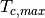
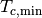
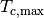

27. Dynamic Global Vegetation Model¶
In CLM the user may choose to run the CN model as a dgvm (dynamic global vegetation model) (CNDV). Note that CN must be active to run the dgvm in CLM. In this section, a general description of the dgvm processes and how they integrate with CN are provided. Further details are available in the CLM3DGVM Technical Note (Levis et al. 2004). The focus here is on the differences relative to the corresponding processes in the CLM3DGVM.
As with the CLM3DGVM, CNDV can simulate biogeographical changes only for natural vegetation. Although the vegetated land unit may be separated into naturally vegetated and human managed land units to permit a coexistence of natural and human managed vegetation, CNDV only works if the human managed land units are fixed. CLM’s transient land cover and land use change capability (see Chapter 21), which permits transitions between natural and human managed plant functional types (PFTs), is incompatible with the CNDV option at this time.
CNDV was implemented by introducing CLM3DGVM code to the hourly CN framework only to the extent necessary to simulate annual biogeography updates. This includes the annual processes of light competition, establishment, and survival [see sections 2.7 and 2.10, Levis et al. (2004)] as they pertain to the calculations of PFT cover (FPC) and population (P) but not processes related to carbon pools, leaf area index (LAI), or canopy height. In CNDV we added complexity to the gap mortality calculation with annual heat stress and growth efficiency considerations from the corresponding CLM3DGVM algorithm [section 2.8, Levis et al. (2004)]. All other ecosystem processes (allocation, phenology, fire, etc.) are handled by CN modules. Unlike in the CLM3DGVM, in CNDV, annual biogeography updates are interpolated to hourly intervals.
27.1. Establishment and survival¶
The PFT distribution in the vegetated land unit is typically prescribed in CLM (see section 2.1.2) except for the case when CNDV is active. In CNDV the model begins with no PFT information per grid cell and evaluates whether or not a PFT may establish or survive according to the PFT’s bioclimatic limits (Table 27.1). Shrub PFTs are treated as trees at establishment.
CNDV omits the CLM3DGVM’s annual introduction of saplings when a PFT can establish. The CLM3DGVM merged sapling carbon pools with a PFT’s existing carbon. The resultant leaf carbon (annual maximum value) would update the FPC, i.e. the foliar projective cover or fraction of the vegetated land unit occupied by the PFT [section 2.10, Levis et al. (2004)]. Instead, CNDV updates the FPC using the PFT’s annual maximum leaf carbon without an addition from saplings. For newly established PFTs, CNDV assigns seed leaf carbon equal to 1 g C m-2 of land unit area and seed FPC equal to 0.05 for grasses and 0.000844 for trees (values determined from CLM3DGVM simulations). The addition of establishing individuals to P, a PFT’s population, is handled as in the CLM3DGVM.
FPC changes annually as in the CLM3DGVM but now is interpolated to an hourly increment using the algorithms designed to conserve energy and mass in the CLM’s dynamic land use option.
27.2. Light competition¶
In CNDV’s order of annual processes, light competition is invoked before establishment and survival. However, light competition does not affect a simulation starting from bare ground until the vegetation fills the land unit (a few years at least).
Light competition starts with a calculation updating FPC. For reference, this update was included at the end of allocation in the CLM3DGVM [section 2.6, Levis et al. (2004)].
Due to their height advantage, trees will cover up to 95% of the land unit when their productivity permits, as in the CLM3DGVM, regardless of grass and shrub productivity. Grasses get second priority, as in the CLM3DGVM, even with shrubs included now. Shrubs, then, have access to the remaining space and follow the tree algorithm for self thinning [section 2.7, Levis et al. (2004)]. As a result, trees typically dominate in the most productive regions, grasses in less productive regions, and shrubs in the least productive non-desert regions (Zeng et al. 2008).
27.3. CN processes modified for the CNDV coupling¶
Gap mortality and mortality from fire: Constant annual mortality rate of 0.02 is changed for trees and shrubs to an annual rate calculated as in the CLM3DGVM accounting for background and stress mortality [section 2.8, Levis et al. (2004)]. The CN module converts the annual rate to hourly.
The CLM3DGVM used the concepts of average plant individual and PFT population, P. CNDV retains these concepts in the light competition, establishment, and survival calculations. In CNDV we account for the individuals removed hourly from P in response to CN’s fire and gap mortality, while the carbon pools per individual and FPC remain constant. Ultimately, P updates should only affect the annual processes of light competition, establishment, and survival, so the P update may be moved to the end of the year in a future version of CNDV.
Vegetation Structure Update: CN stocking is a constant, while in CNDV stocking changes as P and FPC change. This affects the top-of-canopy height calculation. CN specific leaf area and stem diameter calculations are kept, while the height calculation is replaced with the CLM3DGVM’s [section 2.6, Levis et al. (2004)]. CN stem area index (SAI) is kept.
Allocation: CN calculates a PFT’s fraction of currently allocated carbon relative to the total allocation instead of obtaining a constant value from CLM’s PFT-physiology file. In CNDV, we returned to the constant values in the old PFT-physiology file to get a reasonable simulation of PFTs. For CNDV to use the calculated fraction, we will need to change the algorithm for PFTs in early stages of growth.
| Survival | ||||
|---|---|---|---|---|
 ( ( C) C) |
 (C) |
|||
| Tropical broadleaf evergreen tree (BET) | 15.5 | No limit | 0 | |
| Tropical broadleaf deciduous tree (BDT) | 15.5 | No limit | 0 | |
| Temperate needleleaf evergreen tree (NET) | -2.0 | 22.0 | 900 | |
| Temperate broadleaf evergreen tree (BET) | 3.0 | 18.8 | 1200 | |
| Temperate broadleaf deciduous tree (BDT) | -17.0 | 15.5 | 1200 | |
| Boreal needleleaf evergreen tree (NET) | -32.5 | -2.0 | 600 | |
| Boreal deciduous tree | No limit | -2.0 | 350 | |
| Temperate broadleaf deciduous shrub (BDS) | -17.0 | No limit | 1200 | |
| Boreal broadleaf deciduous shrub (BDS) | No limit | -2.0 | 350 | |
| C4 | 15.5 | No limit | 0 | |
| C3 | -17.0 | 15.5 | 0 | |
| C3 arctic | No limit | -17.0 | 0 |
Adapted from Table 1 of Levis et al. (2004) to include shrub PFTs.
 , coldest minimum monthly air temperature for
survival of previously established PFTs;  , warmest
minimum monthly air temperature for establishment of new PFTs;
, minimum annual growing degree-days above
5 C for establishment of new PFTs. Levis et al.
(2004) include an explanation of these variables and their use.
C for establishment of new PFTs. Levis et al.
(2004) include an explanation of these variables and their use.